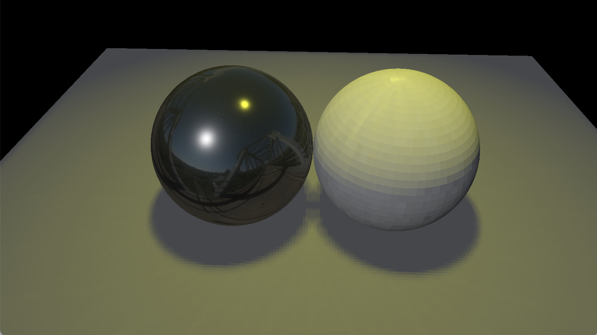
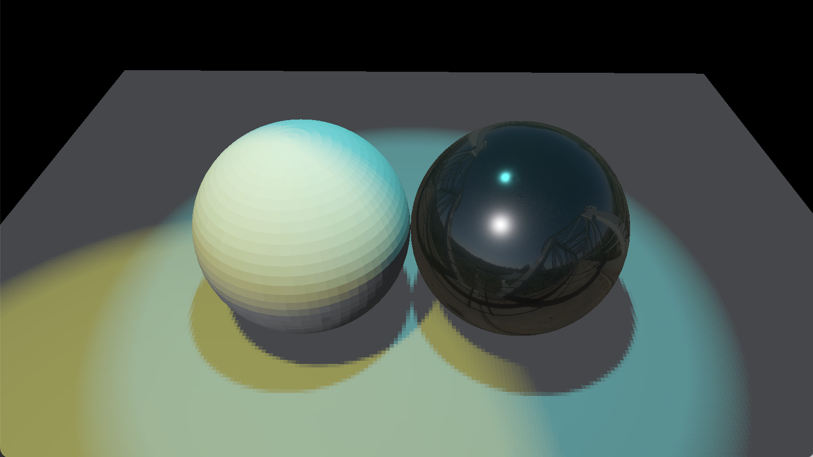
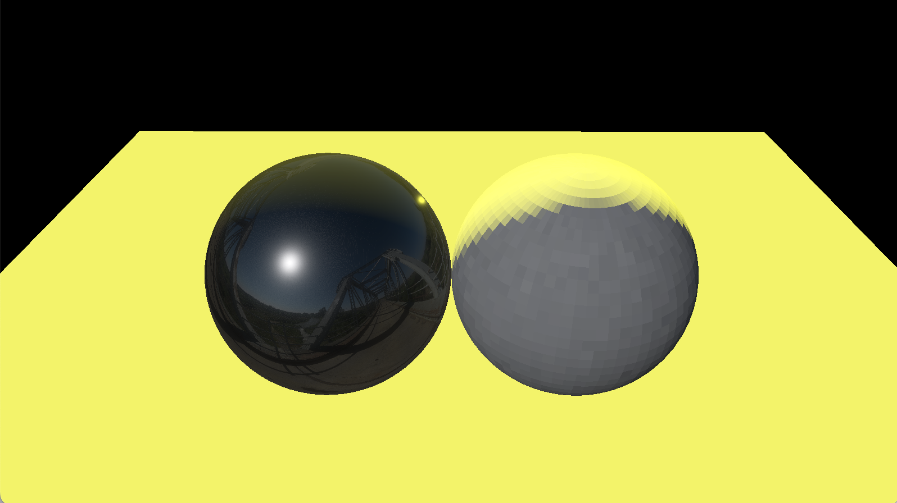
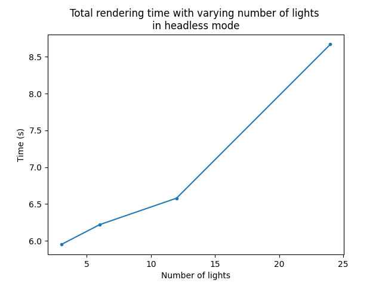
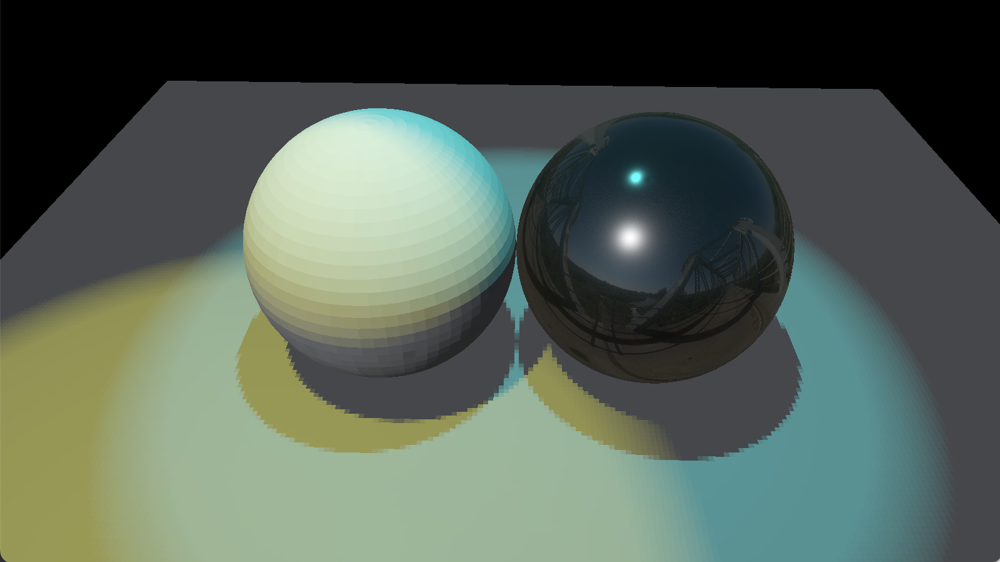
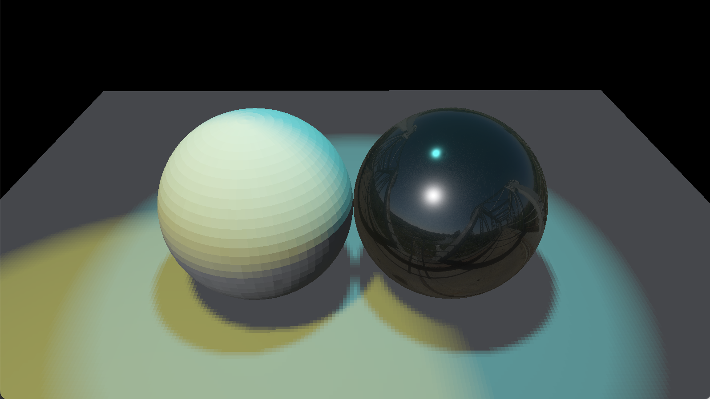
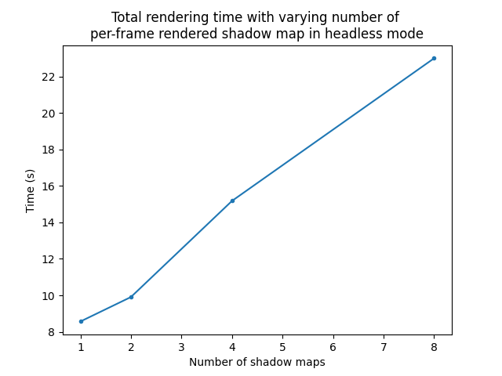
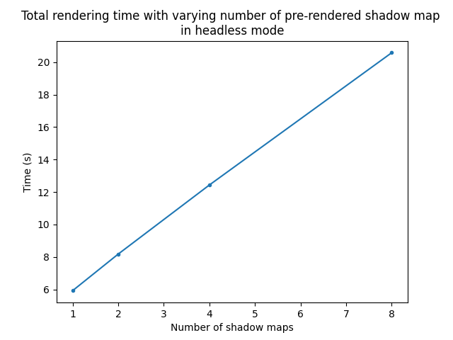
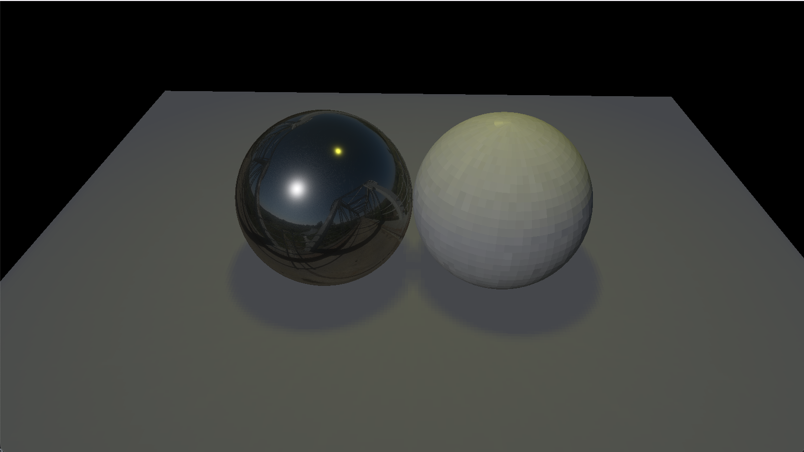

I store light information in array of light structs of their specific light type. I pass the light to shader in a separate uniform buffer. For Lights with shadow map request, I render a depth map for each of the lights, and pass the shadow map to shader as array of texture2Ds. Then I use a shared sampler to sample from all the shadow map texture. This enables me to by-pass the max number of samplers constraint imposed by Vulkan/OpenGL and also enables me to pass in shadow map of different size.
My Lit Scene A3-create
I created a scene with a disco ball (a free 3D model downloaded from turbosquid). The disco ball is made up of many thin cubes. I placed 5 spot lights of different colors inside the disco ball so that they cast shadows of specific patterns through the gap between thin cubes. The lights shared the same transform as the ball so they move together.
Sources of textures and models:
Disco ball: https://www.turbosquid.com/3d-models/disco-ball-1408606
I implement 3 new light types in src/include/scene/light.h.
The sphere light has the following members:
vec4 pos: position of light in world space
vec4 color: which is the result of tint * power
vec4 others: radius, limit, *, *. Limit is set to -1 by default to indicate there is no limit.
vec4 shadow: shadow_res, shadow map index, *, *. Shadow_res is the length of shadow map. Shadow map index is used to access the corresponding shadow map textureCube in shader.
The soit light has the following members:
mat4 lightVP: a transformation matrix that transform a world coordinate to light space. It is the result of light's proj * view.
vec4 pos: position of light in world space
vec4 direction: light direction in world space
vec4 color: which is the result of tint * power
vec4 others: radius, limit, outter, inner. Outter is equal to fov/2. Inner is equal to fov*(1-blend)/2
vec4 shadow: shadow_res, shadow map index, *, *. Shadow_res is the length of shadow map. Shadow map index is used to access the corresponding shadow map texture2D in shader.
The sun light has the following members:
vec4 direction: direction of light in world space
vec4 color: which is the result of tint * power
vec4 others: angle, *, *, *
The above light info structs are stored in arrays and passed into the shader. To make the data structure more compact and also follows OpenGL's memory alignment requirement, I store all the data in either vec4 or mat4.
These light infos are contained in a generic Light struct which also contains a shared pointer to Transform. This enables the renderer to update the position, direction and lightVP matrix in real time and shows the movement of lights.
All light infos and their generic Light struct are stored in a LightInfoList struct when loaded from s72 in src/include/scene/scene.h. They are categorized into their respective light types. The LightInfoList is then passed to the Vulkan app.
Adding Direct Lighting to Materials A3-materials
I pass light infos to the fragment shader using a separate light-specific uniform buffer defined in src/include/vertex.hpp. It contains 3 arrays for each light type of a fixed size. It also contains 3 uint32_t to indicate the actual number of lights in the scene.
I add an extra vec4 padding to enable 16-bytes memory alignment.
struct UniformBufferObjectLight {
alignas(4) uint32_t spotLightCount;
alignas(4) uint32_t sphereLightCount;
alignas(4) uint32_t directionalLightCount;
alignas(4) uint32_t padding;
alignas(16) SphereLight sphereLights[MAX_LIGHT_COUNT];
alignas(16) SpotLight spotLights[MAX_LIGHT_COUNT];
alignas(16) DirectionalLight directionalLights[MAX_LIGHT_COUNT];
};
For lambertian material, I calculate the lights as point lights. For pbr material, I calculate the closest point using function calculateClosestPoint in src/shaders/common.glsl, and then estimate the interal amount of light with the closest point. I also applied sphere normalization.
Notice: I scale down irradiance from environment map and increase the light strength/power to show the light more clearly.
Here's a scene with a pbr sphere on the left, a lambertian sphere on the right and a sphere light located in the center above the sphere and looking downwards.

Here's a scene with a pbr sphere on the right, a lambertian sphere on the left, a blue spot light located in the center above the sphere and a yellow spot light located in the bottom left corner of the scene, both looking downwards.

Here's a scene with a pbr sphere on the left, a lambertian sphere on the right and a sun light located in the center above the sphere and looking at an angle.

To test the performance impact of adding additional lights to a scene, I use the scene with both pbr and lambertian sphere and add sun light, spot light and sphere light. No light has shadow map. I render the scene for 120 frames and run for 100 iterations in headless mode. Then I compare the total rendering time for doubling the count of the lights (for each light type).
Here's the plot of the total rendering time with 3, 6, 12, 24 lights in the scene. The total rendering time increase as the number of lights increase, though not perfectly linearly. This is acceptable as the system performance vary from time to time.

Based on the graph, it seems that the viewer is capable of handling over thousands of lights and achive over 100 frames per second.
Adding Shadows for Spot Lights A3-shadows
I create a pipeline for rendering depth map. Its vertex shader module is defined in src/shaders/depth.shader.vert. Since it does not render anything to screen, it does not need a fragment shader. The depth vertex shader takes in the vertex position as input, and use the model matrix to convert position to world space and the lightVP matrix to convert world space coordinate to light space. The model and lightVP are passed in as push constants since I need to update lightVP for each light in one render command recording process.
Before rendering the actual scene, I add a number of passes to render shadow map. For each shadow map render pass, I bind the depth map rendering pipeline, update lightVP matrix in push constant for the current light and generate a depth map to framebuffer and use subpass to write the depth map to a depth stencil attachment. Then in the actual rendering pass, I pass the image views of these shadow maps as texture2D to the shader and pass a shared sampler to the shader to sample from all shadow maps. The shadow map array has a fixed size. This corresponds with the size of the light array in the light uniform buffer object.
In shader code (src/shaders/lamber.shader.frag, src/shaders/pbr.shader.frag), I add a calculateShadow() function to calculate the percentage of shadows, and I multiply the radiance from the light with (1.0 - shadow) to get the actual amount of light.
To avoid shadow map artifacts, I enable cull front face and set depth bias for the vulkan pipeline.
I use a range variable to determine the number of PCF samples. During shadow calculate, I sample positions in the range of [coord-range*texelSize, coord+range*texelSize] from the shadow map. So in total, I take (range*2+1)*(range*2+1) samples. Currently, range is set to 2. So my shader takes 25 PCF samples. The eventual shadow is the average of all samples. So each sample is weighted equally.
Here's an image that shows the shadow for both pbr and lambertian materials. Both light has shadow resolution 1024.
Here's the image for the same scene when shadow map is changed to 2048.

Here's the image for the same scene when shadow map is changed to 512.

To test the performance impact of adding additional lights with shadow map to a scene, I use the scene with both pbr and lambertian sphere again and but only contains spot lights. All spot lights have shadow resolution 1024. I render the scene for 120 frames and run for 100 iterations in headless mode. Then I compare the total rendering time for doubling the count of the lights.
Here's the plot of the total rendering time with 1, 2, 4, 8 spot lights in the scene. The shadow map are rendered per frame. The total rendering time increase as the number of lights increase.

Here's the plot of the total rendering time with 1, 2, 4, 8 spot lights in the scene with the shadow map pre-rendered. The total rendering time also increase as the number of lights increase. But the overal rendering time is smaller than shadow map rendered per-frame.

Extra: Light Sort A3x-sort
Cover, at least:
your chosen method for sorting lights to meshes.
Build a scene in which your light sorting technique provides a performance improvement over rendering all meshes with all lights.
Include a screen shot (and the scene itself).
Include data demonstrating the performance improvement in rendering this scene.
E.g., a graph of the frame times for an animated fly-through of the scene with and without your sorting code enabled.
Extra: PCSS Soft Shadows A3x-soft
Cover, at least:
your implementation of PCSS (sampling pattern, counts)
Include images showing the same shadows rendered with and without PCSS, showing the spreading behavior as the shadow stretches further from the light.
Extra: Shadows for Sun Lights A3x-cascade
Cover, at least:
your choice of shadow map cascade levels and layout;
how your cascade is packed into a texture;
how [if at all] your cascade avoids "boiling" as the camera moves
Include images showing a scene rendered with a shadow-casting distant directional light.
Include images with a modified shader color-coding pixels by what cascade level they are sampling.
Include images from a debug camera, showing how the shadow map cascade fits the camera frustum.
Extra: Shadows for Sphere Lights A3x-cube
To render shadow map for sphere lights, I set up a render pass for rendering a cubemap. The render pass save the output to a layered image with 6 layers, where each layer is connected with a frame buffer and an image view. Each of them will store one face of the cubemap. I invoke rendering 6 times for each sphere light, with different view matrices looking at different directions of the cube. I store all light matrixes and light infos as arrays in a uniform buffer and store the index to retrieve information from arrays in a push constant.
The shader module for rendering each face of the cubemap is defined in src/shaders/depth.cube.shader.vert and src/shaders/depth.cube.shader.frag. The depth is calculated in src/shaders/depth.cube.shader.frag as the length of the light to fragment vector (a float as the cubemap image has format VK_FORMAT_R32_SFLOAT).
I pass the shadow cubemap as array of textureCube to the material shaders and use a shared sampler to sample the cubemap. I calculate the light to fragment vector in light space, use the vector to sample from shadow map, and perform PCF in 3 axes. The calculation of sphere light shadow is done in function calculateShadowCube
Here's the image for a scene with sphere light and shadow map.

Extra: Other A3x-*
If you have recieved instructor permission to pursue another extra credit activity, include information about that activity here.